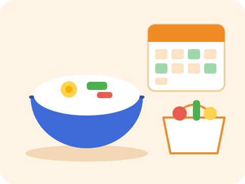

서비스 소개
자취를 하면 매 끼니 "오늘 뭐 먹지?"를 고민하다 결국 배달 음식을 시키게 됩니다. 한끼로그는 일주일 식비와 먹을 끼니 수를 먼저 정하고, 그 안에서 만들 수 있는 메뉴를 골라 예산 안에서 끝나는 식단 계획을 세우도록 돕습니다.
주요 기능
-
목표별 메뉴 추천
절약·간편·든든 중 목표를 고르면 그에 맞는 메뉴를 먼저 보여 줍니다.
-
예산 맞춤 계획
고른 메뉴의 예상 비용을 바로 계산해 주간 예산을 넘지 않게 안내합니다.
-
한눈에 보는 계획표
확정 전 계획을 한 화면에서 확인하고, 필요한 단계만 골라 수정할 수 있습니다.
이용 방법
- 목표 정하기 이번 주 식단의 목표를 고릅니다.
- 예산·끼니 입력 주간 식비와 직접 해 먹을 끼니 수를 입력합니다.
- 메뉴 고르고 확정 예산 안에서 메뉴를 골라 계획을 확정합니다.
한 끼 예산 계산기
주간 식비와 끼니 수를 넣으면 한 끼에 쓸 수 있는 금액을 바로 보여 줘요.
주간 식비를 입력해 주세요.
자취 꿀팁
- 장보기 전에 냉장고 사진을 찍어 두면 중복 구매를 막을 수 있어요.
- 대파·양파처럼 여러 메뉴에 쓰는 재료는 묶음으로 사는 게 이득이에요.
- 대파는 썰어서 지퍼백에 담아 냉동하면 한 달까지 써요.
- 밥은 한 공기씩 랩에 싸서 냉동한 뒤 전자레인지에 데워요.
- 계란·두부·참치캔은 10분 요리의 기본 재료예요.
- 프라이팬 하나로 볶음밥, 덮밥, 부침을 모두 만들 수 있어요.
일주일 식단 만들기
- 목표
- 예산·끼니
- 메뉴
- 확인
- 완료
1. 이번 주 식단의 목표를 골라 주세요
2. 이름과 예산, 끼니 수를 입력해 주세요
3. 이번 주에 만들 메뉴를 골라 주세요
냉장고에 있는 재료부터 쓰고 싶다면, 재료로 만들 수 있는 메뉴를 먼저 찾아보세요.
냉장고 재료로 메뉴 찾기
가진 재료를 하나씩 추가한 뒤 메뉴 찾기를 누르세요. 재료는 최대 8개까지 넣을 수 있어요.
자주 쓰는 재료
전체 메뉴
4. 계획을 확인해 주세요
계획이 완성되었어요
🛒 이번 주 장보기 목록
새 메뉴 알림 받기
매주 월요일, 5천 원 이하로 만드는 새 자취 메뉴를 이메일로 보내 드려요.